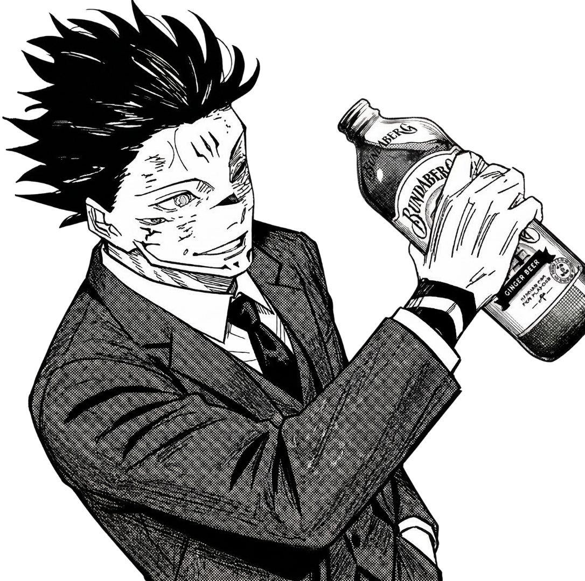
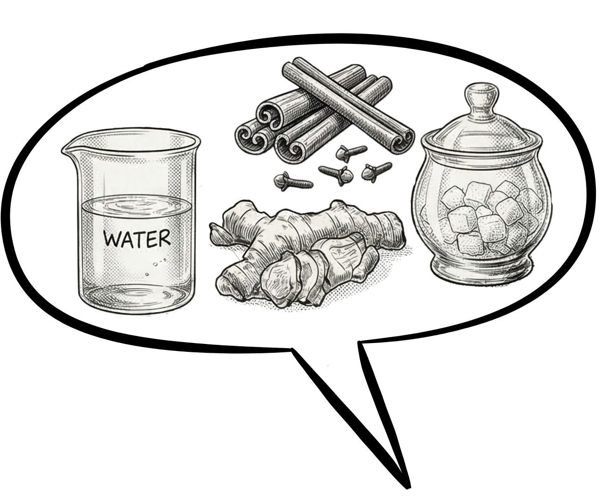
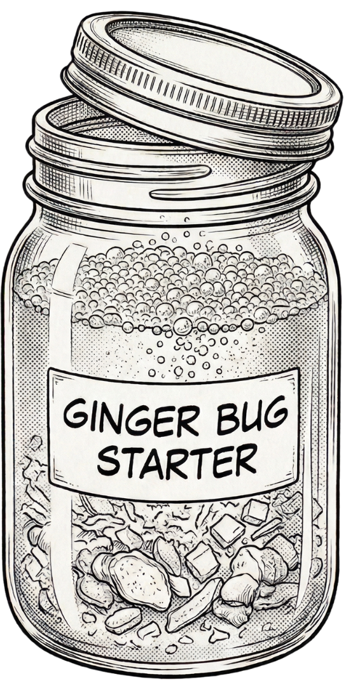
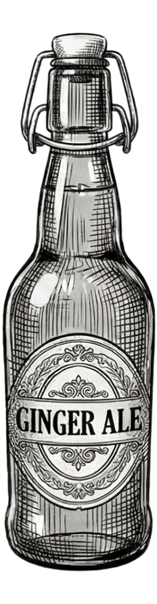
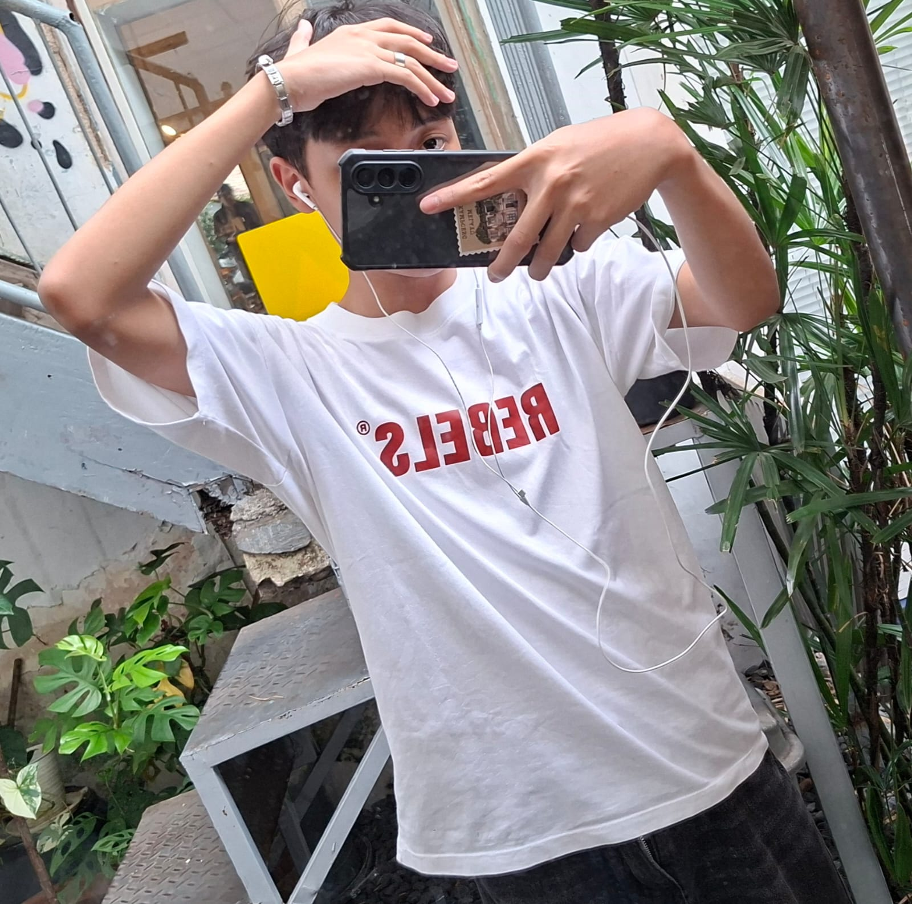
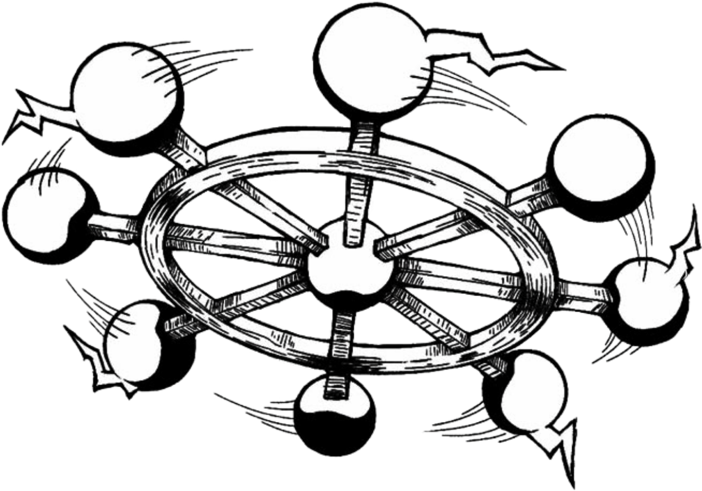

Ginger beer is a carbonated, non-alcoholic drink made from fermenting ginger roots and sugar. It originated in England and is popular for its intense ginger flavor and fizzy sensation.
Even though this drink has the name “beer,” it is not an alcoholic beverage. Most ginger beers contain up to 0.5% alcohol. The name “beer” comes from the way it is produced through fermentation.
Ginger beer has a bold and strong ginger flavor balanced with sweetness. This drink also has a fizzy sensation due to carbonation. It is considered a soft drink.




